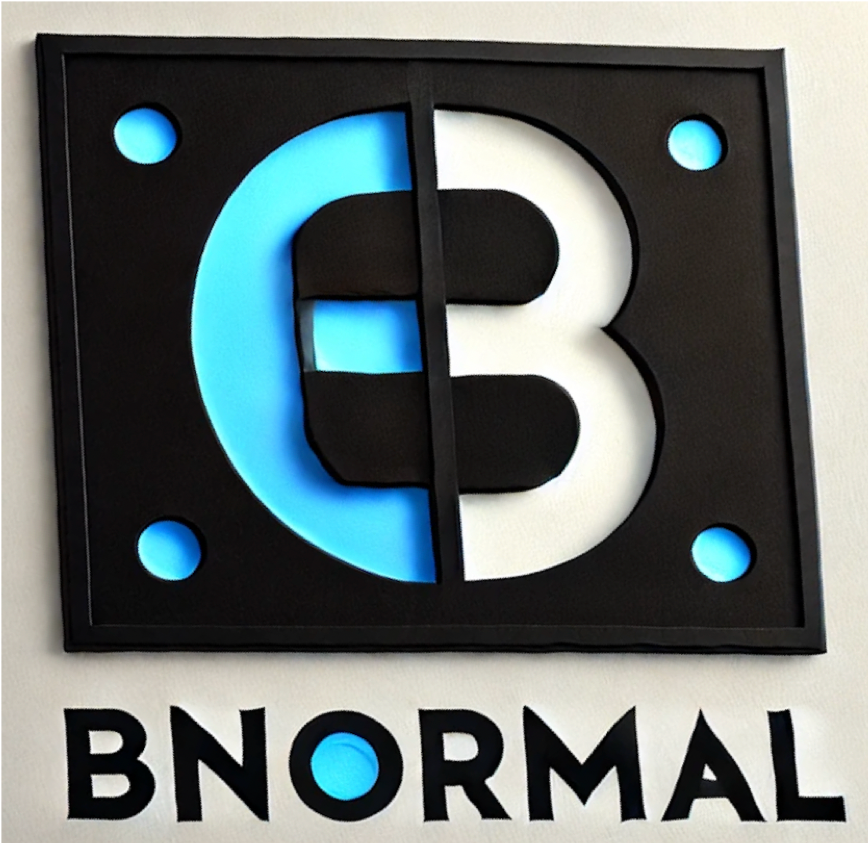

Scientific Contributions

About me: I am a Senior Research Scientist with a double doctoral degree in Machine Learning and an M.Sc in Statistics. With a rich background spanning both the public and private sectors, I have served as a Consultant and Senior Research Scientist, contributing to a diverse range of projects. My expertise is evidenced by a multitude of peer-reviewed journal publications. Currently, I am deeply engaged in research areas such as ML for Computer Vision, Generative AI, Causal Inference, Causal ML and Statistical Methods. I am driven by a perpetual curiosity, always seeking new opportunities to expand my knowledge and skills.
If you want to know more talk to my CV 😉
Research Scientist | Machine Learning & AI | Computer Vision | Causal Inference

Developed advanced deep learning models for computer vision and causal ML, focusing on longitudinal modeling and trajectory prediction. Extensive experience using Large Language and Vision Models for zero- and few-shot learning.
Developed machine learning and statistical models for pricing optimization, churn prediction, and customer retention using regression analysis, gradient boosting, and neural networks. Built automated ML pipelines with AWS SageMaker for scalable deployment and implemented constrained optimization models for risk assessment and profitability.
Implemented ML solutions for big data consulting projects, including deep learning models for human trajectory prediction and customer behavior analysis. Developed NLP-based sentiment analysis using web scraping, word embeddings, and RNN/LSTM models for improved prediction accuracy.
Analyzed economic and financial indicators for investment risk assessment and portfolio management. Developed econometric models for public policy evaluation, applying survival analysis, clustering, and counterfactual simulation techniques.
Used for developing machine learning models, statistical analysis, and data processing in research and industry projects.
Implemented deep learning models for computer vision, probabilistic modeling, and time-series forecasting.
Deployed ML pipelines for large-scale training, model serving, and workflow automation in cloud environments.
Designed models for counterfactual analysis, risk evaluation, and decision-making in medical imaging and finance.
Developed generative models for medical imaging, trajectory prediction, and biomarker discovery.
Email: berardino.barile@gmail.com